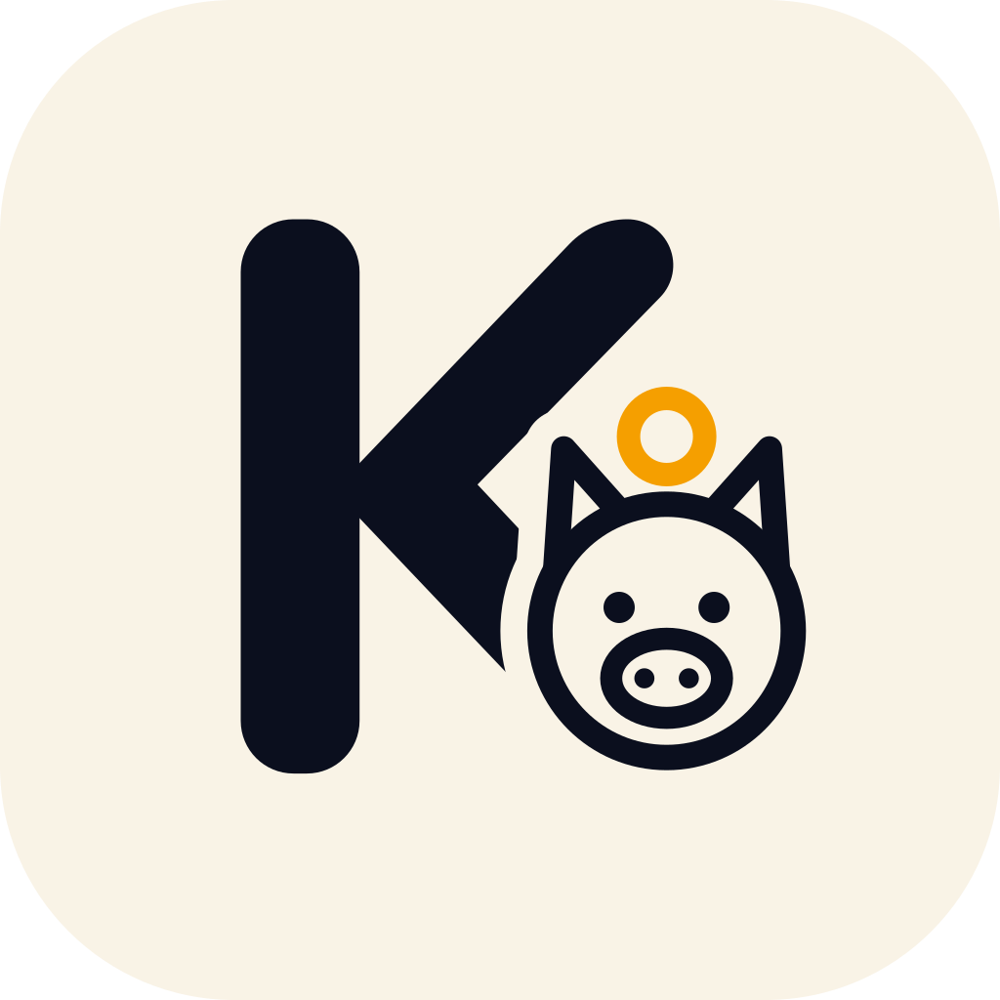
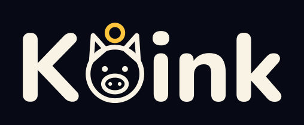

Every asset in its light and its dark version, generated from src/brand/art.js by npm run brand.
Icon

Icon, lightIcon, dark
Wordmark
Wordmark, light

Wordmark, dark
Launch animations
Tap one to play it again. The files play at the speed they were designed at; the app plays them twice as fast (the time in brackets).

1. coin-drop, light (1900 ms, 950 ms in the app)

1. coin-drop, dark (1900 ms, 950 ms in the app)

2. draw-on, light (2100 ms, 1050 ms in the app)

2. draw-on, dark (2100 ms, 1050 ms in the app)3. pop-toss, light (1800 ms, 900 ms in the app)3. pop-toss, dark (1800 ms, 900 ms in the app)4. mint, light (2200 ms, 1100 ms in the app)4. mint, dark (2200 ms, 1100 ms in the app)5. peek, light (2400 ms, 1200 ms in the app)5. peek, dark (2400 ms, 1200 ms in the app)
Logo press (tap on the logo in the header)
1. oink, light (1200 ms)1. oink, dark (1200 ms)2. keypress, light (1100 ms)2. keypress, dark (1100 ms)3. wink-flip, light (1100 ms)3. wink-flip, dark (1100 ms)4. hop, light (1000 ms)4. hop, dark (1000 ms)5. turnabout, light (1100 ms)5. turnabout, dark (1100 ms)